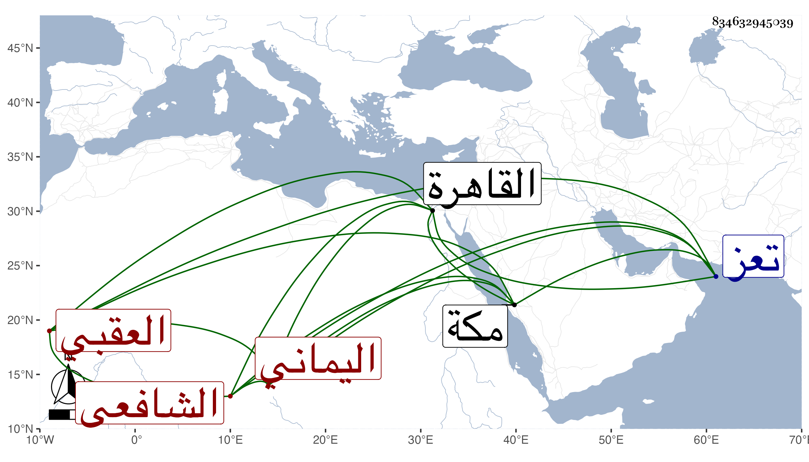

0902Sakhawi.DawLamic.ITO20230111-ara1.EIS1600.834632945039
Biography ID: 834632945039
أحمد بن إبراهيم بن أحمد الشهاب العقبي اليماني الشافعي ولد كما ذكر في سنة ثلاث وعشرين وثمانمائة وقدم القاهرة في سنة سبع وأربعين فلازم الزين البوتيجي وسكن عنده الفاضلية وعرف به وكتب الإملاء عن شيخنا بل وأخذ عنه في شرح الألفية وغيرها وكذا أخذ عن ابن حسان وغيره وكتب بخطه أشياء واختص بابن الجريس وقتا وصار في ظله حتى مات وبعده تحول إلى تعز وهي بالقرب من بلده وأقام بها وصار يحج منها كل سنة ونعم الرجل سكونا ومشاركة في الجملة مع تعفف مات بمكة في المحرم سنة خمس وتسعين رحمه الله وإيانا .
